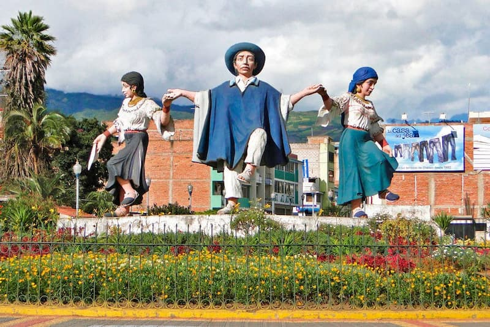

Otavalo is a vibrant town in northern Ecuador, famous for its colorful indigenous market, rich Kichwa culture, and beautiful natural surroundings. Located about two hours north of Quito, it is surrounded by mountains, the Imbabura and Cotacachi volcanoes, and the scenic San Pablo Lake. Visitors come to experience its traditional crafts, textiles, and music, as well as nearby attractions like the Peguche Waterfall. Otavalo is also known for its cultural festivals, such as Inti Raymi, which celebrates the sun and harvest with dance, music, and community spirit.
